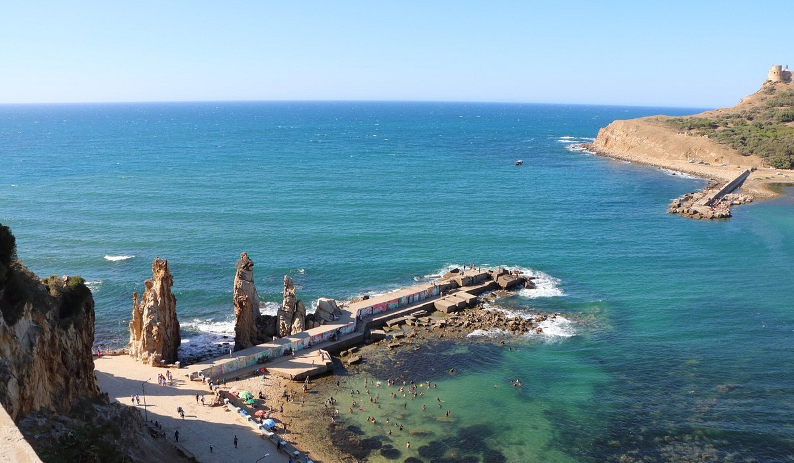
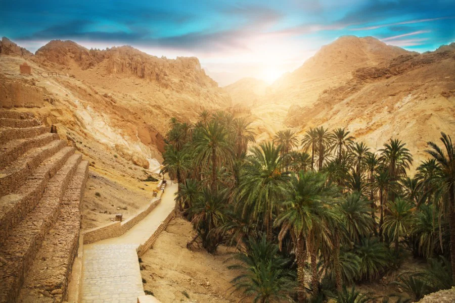

Géographie naturelle
Trois visages
d'un même pays
Du nord méditerranéen aux sables sahariens, la Tunisie traverse trois grandes zones naturelles qui se succèdent du nord au sud, offrant des écosystèmes radicalement différents sur un territoire relativement compact.

01
Le Nord méditerranéen
Collines boisées, vallées verdoyantes, rivières pérennes — le nord tunisien ressemble parfois à la Toscane. Des forêts de chênes-lièges et de pins s'étendent sur les Kroumiries. La Medjerda, seule vraie rivière permanente du pays, y coule entre des plaines céréalières fertiles. C'est ici que se concentre l'essentiel de la biodiversité tunisienne.

02
Le Centre montagneux
La dorsale tunisienne traverse le pays d'est en ouest avec ses reliefs calcaires et ses forêts de pins. Le Djebel Chambi, point culminant à 1 544 mètres, domine un parc national riche en espèces endémiques. Les chotts — ces lacs salés immenses — marquent la transition vers le sud. Un monde à part, moins fréquenté, d'une beauté sévère.

03
Le Sud saharien
Un tiers du pays est désert. Dunes de sable doré, hamadas rocailleuses, oasis verdoyantes et ksour perchés composent un paysage d'une beauté lunaire et absolue. La vie s'est adaptée à l'extrême : fennecs, gerboises, scorpions, palmiers-dattiers et plantes succulentes peuplent ce milieu en apparence hostile mais d'une richesse écologique méconnue.